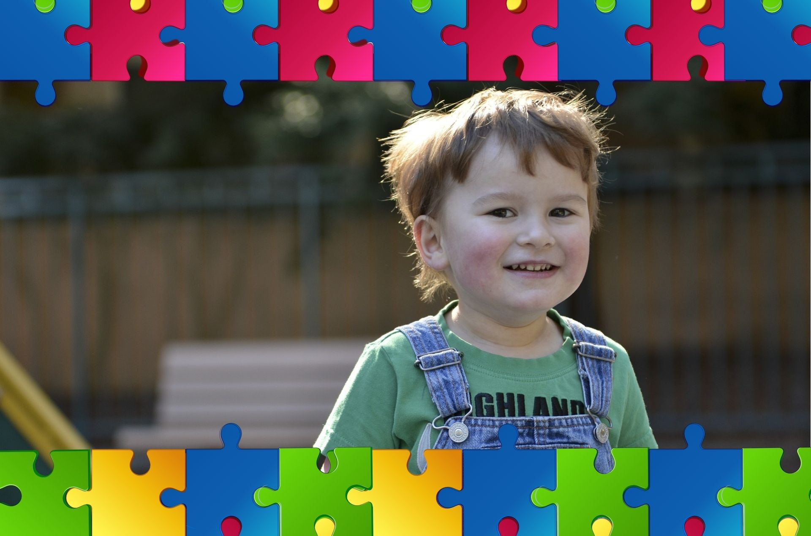

Autismo
Equipe de Educação Especial – 2017
Definição de Autismo
O Transtorno do Espectro Autista (TEA), crônica, incapacitante que compromete o desenvolvimento normal de uma criança e se manifesta tipicamente antes do terceiro ano de vida. Caracteriza-se por lesar e diminuir o ritmo do desenvolvimento
psiconeurológico, social e linguístico.
Estas crianças também apresentam reações anormais a sensações diversas como ouvir, ver, tocar, sentir, equilibrar e degustar.
A linguagem é atrasada ou não se manifesta. Relacionam-se
com pessoas, objetos ou eventos de uma maneira não usual, tudo levando a crer que haja um comprometimento orgânico do Sistema Nervoso Central:
• Comunicação; Interação e Imaginação.
Causas do Autismo
A ciência ainda não sabe porque ocorre o autismo.
Existe a hipótese de que é um fenômeno de causa genética, associada a mecanismos alérgicos não identificados e desenvolvidos ainda no útero, durante a gestação. Esses processos desencadeiam
inflamação que altera o desenvolvimento do cérebro e as ligações no hemisfério direito.

Sintomas Comuns
Conforme - ASA ( Autism Society of American). A maioria dos sintomas está presente nos primeiros anos de vida da criança variando em intensidade de mais severo a mais brando.
1. Dificuldade de relacionamento com outras crianças;
2. Riso inapropriado ;
3. Pouco ou nenhum contato visual ;
4. Não quer ser tocado;
5. Isolamento; modos arredios;
6. Gira objetos;
7. Cheira ou lambe os brinquedos, inapropriada fixação em objetos;
8. Perceptível hiperatividade ou extrema inatividade;
9. Ausência de resposta aos métodos normais de ensino;
10. Aparente insensibilidade à dor;
11. Acessos de raiva - demonstra extrema aflição sem razão aparente.
Quando foi descoberto
A síndrome do autismo foi descoberta simultaneamente, na década de 1940, por dois médicos de origem austríaca, que trabalhavam separadamente:
Leo Kanner, erradicado nos Estados Unidos, e Hans Asperger, que permaneceu na Europa durante
o período da Segunda Guerra Mundial. A palavra autismo foi criada pelo psiquiatra suíço Paul Eugen Bleuler para descrever a "fuga da realidade" observada em alguns indivíduos.
Sobre a Saber
A Saber Educacional iniciou suas atividades em abril de 2020, com o objetivo de oferecer atendimento clínico especializado a crianças, adolescentes e adultos
Nossas Redes Sociais